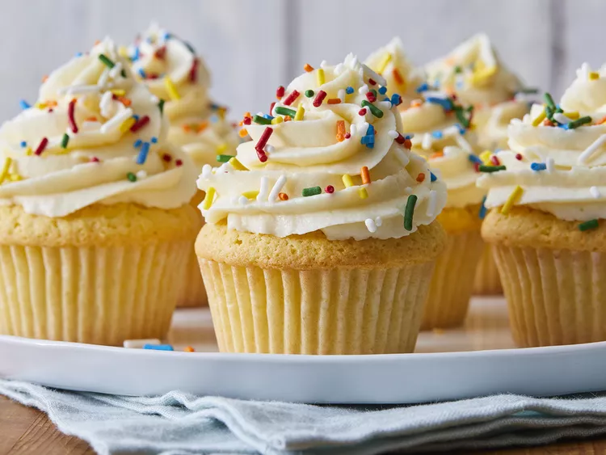

Vanilla Cupcakes

Description
These easy to make vanilla cupcake recipe is the perfect choice for any birthday occasion!
All you need is a couple of everyday ingredients, baking utensils and 35 minutes of your time.
Ingredients
- 3/4 cup superfine sugar
- 2/3 cup butter, softened
- 3 large eggs
- 1 1/2 cups self-rising flour
- 1 teaspoon vanilla extract
Directions
- Gather all ingredients. Preheat the oven to 350 degrees F (175 degrees C). Grease
a 12-cup muffin tin or line cups with paper liners
- Beat sugar and butter together in a large bowl with an electric mixer until light and fluffy.
Add eggs one at a time, beating well after each addition.
- Beat in vanilla extract. Stir in flour just until mixed; spoon batter into the prepared muffin cups, filling each 3/4 full.
- Bake in the preheated oven until the tops spring back when lightly pressed, 18 to 20 minutes.
Cool in the tin briefly before transferring to a wire rack to cool completely.